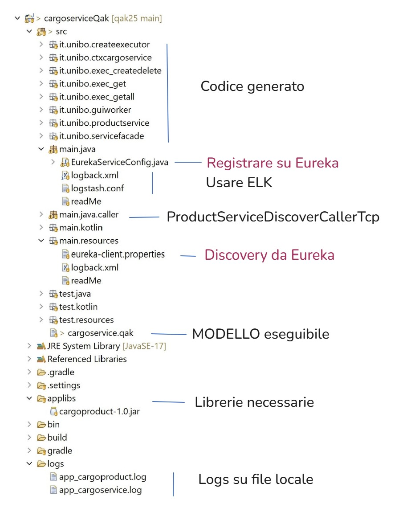

cargosystem25¶
Requisiti¶
Progettare e costruire un sistema software per il carico/scarico di prodotti in modo automatizzato mediante robot-DDR su di un cargo navale. I prodotti da caricare/scaricare devono essere stati precedentemente registrati su database.
Versione precedente: Cargo24
Impostazioni preliminari¶
Analisi dei requisiti e del problema: individuazione dei BoundedContexts applicativi
Introduzione alla Clean Architecture e ai principi SOLID
Comunicazione tra componenti software in termini di Business Concepts
Introduzione allo sviluppo agile con
SCRUMVesro componenti con loose-coupling e high-coesion
Idea di DevOps e sua evoluzione
Micro-servizi di supporto attivabili con il file iss2025.yml (uniboyamls/iss2025.yml)
VIDEO Richiami sui Primipassioperativi25¶
VIDEO PRIMI PASSI |
https://unibo.cloud.panopto.eu/Panopto/Pages/Viewer.aspx?id=7ab5ed80-3df7-488c-b59d-b1dd00e8583b Primipassioperativi25 |
VIDEO COMPLETAMENTO WORKSPACE |
https://unibo.cloud.panopto.eu/Panopto/Pages/Viewer.aspx?id=349d30ac-87b7-4890-a09b-b1e7008e50ee - Usa cargoproduct.qak VUOTO per generare build2025S e le directories |
Progetto cargoproduct¶
: Costruire un applicativo Java che realizza la logica CRUD di gestione di prodotti in uno storage di diverse forme: inizialmente una semplice lista in memoria volatile, poi un database MongoDB.

Si veda: progetto cargoproduct e i video:
VIDEO sul progetto cargoproduct¶
VIDEO CARGOPRODDUCT |
https://unibo.cloud.panopto.eu/Panopto/Pages/Viewer.aspx?id=d3598b13-35a6-4732-9924-b1e800f3eec0
|
VIDEO PRODDUCTSERVICELOGICINTRODUCION |
https://unibo.cloud.panopto.eu/Panopto/Pages/Viewer.aspx?id=ff1c4610-af3f-423f-a09e-b1ea00f74ba1
|
VIDEO PRODDUCTSERVICELOGICDISTRIBUTION |
https://unibo.cloud.panopto.eu/Panopto/Pages/Viewer.aspx?id=ea12ece8-ff3c-41df-b160-b1ea00f6944b Breve aggiunta al precedente |
VIDEO PRODDUCTSERVICELOGICIMPLEMENTATION |
https://unibo.cloud.panopto.eu/Panopto/Pages/Viewer.aspx?id=aafd07fe-f4cb-469a-9b68-b1ea00f4ce84
Verso la fine: test con report, distribuzione fat ed esecuzione |
Key-points cargoproduct¶
Impostazione del Workspace Eclipse e di un progetto Gradle con relativo build file.
Adapter (AdapterStorage) per rendere la logica applicativa indipendente dai dispositivi usati per la persistenza.
Predisposizione di AdapterStorage per selezionare la memoria volatile o il database MongoDB usando variabili di ambiente. In assenza, uso del singleton StorageVolatile.
Testing in modo automatizzato con JUnit.
Logging locale su file.
Deployment mediante file di un componente software che:
non è autonomo
produce effetti perchè esegue procedure specificate nell’interfaccia ICrudOps
nel caso di memoria piena, esegue il metodo
createProductrestituendo una stringa generica di errore
cargosystem25 con attori qak¶
Progetto cargoserviceQak¶
Il progetto cargoserviceQak realizza il microservizio come tecnologia Qak definendo un modello (cargoservice.qak) in cui:
Key-points cargoserviceQak¶
il servizio è gestito da un attore produceservice che si con il nome del sup contesto ctxcargoservice e che emette messaggi di log avvalendosi dello Stack ELK
emette messaggi di log usando , avvalendosi dello Stack ELK attivato come insieme di micorservizi su Docker.
le richieste di creazione/eliminazione di un prodotto sono da produceservice ad un attore exec_createdelete
le richieste di lettura di un prodotto sono a un actor exec_get cosi’ come le richieste di visualizzazione di tutti i prodotti (delegate a un actor exec_getall creato dinamicamente)
Uso del ()
{kind=link}
ProductServiceDiscoverCallerTcp¶
Il programma Java ProductServiceDiscoverCallerTcp è un esempio di come fare il doscovery e la chiamata al servizio. (WARNING: va attivato invocando )
Struttura del workspace di cargoserviceQak¶
{kind=link}
Progetto cargoserviceQakGui¶
: dotare il sistema del Progetto cargoservice di una GUI per la interazione uomo-macchina.
Key-points cargoserviceQakGui¶
Progetto cargoserviceM2MQakLocal¶
Key-points cargoserviceM2MQakLocal¶
: dotare il sistema del Progetto cargoservice di una GUI per la interazione uomo-macchina evitando la comunicazione via rete tra il RestController della GUI e il serviceqak.